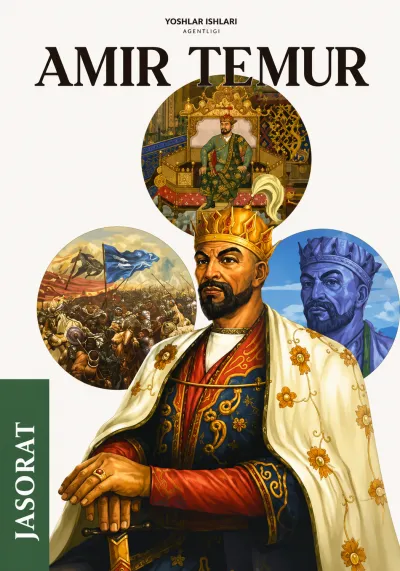

📚5-Bob.Adovat emas,adolat yengadi
Savollar sonini belgilang
Boshlang'ich raqamni tanlang

Qaysi funksiyani xohlaysiz?
Quiz testlar
Quiz aralash
Yopiq savol-javob
Yopiq savol-javob aralash
3-Bob.Cho'ng ziddiyat,navqiron shiddat
3
Yuklanmoqda...
Testni yakunlash